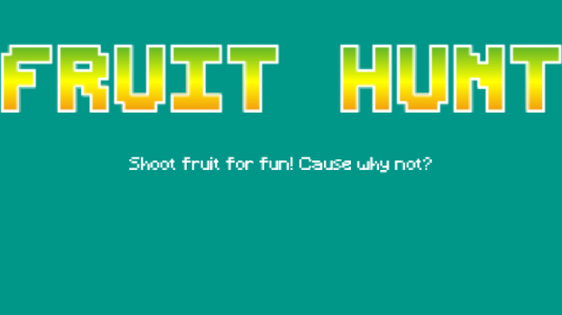
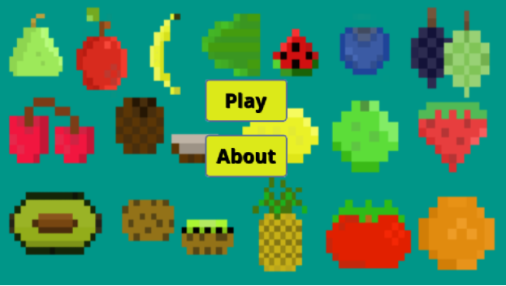
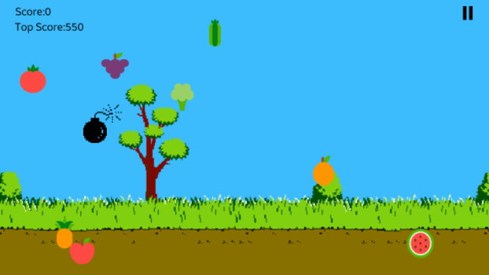
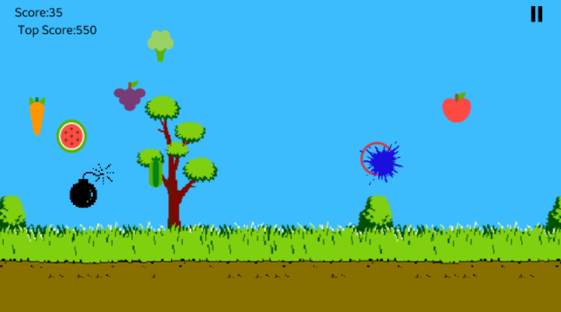

Home
Portfolio
Thunkable




Written Response
This project was created using the Scratch programming language. The purpose of the program is to create a game for Android. The game is titled Fruit Hunt and the objective is to blow up fruit as it apears on the screen and avoid bombs that will also appear. The screenshots illustrate the title screen, th menu screen, and a glimpse into the gameplay.
Github Repository